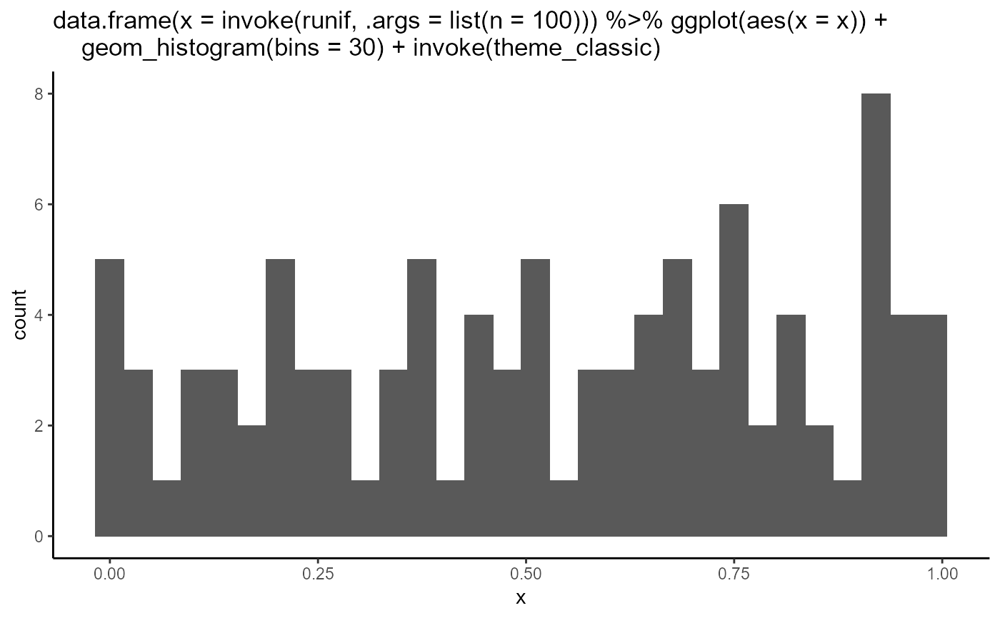

This function uses non standard evaluation (NSE) to create a plot title.
dist_hist(dist_f, ns = 1000, theme = "theme_minimal", bins = 30, seed = 42)
| dist_f | a quoted distribution function: rnorm, runif, rpois, rcauchy |
|---|---|
| ns | how many numbers should be generated? |
| theme | a quoted ggplot theme to be used |
| bins | how many bins should be used in the histogram? |
| seed | passed to |
histogram of a sample of samplesize ns from a distribution
dist_f using ggplot theme
dist_hist("runif", ns = 100, theme = "theme_classic")# Code dist_hist#> function(dist_f, #> ns = 1000, #> theme = "theme_minimal", #> bins = 30, #> seed = 42) { #> dist_fs <- c("rnorm", "runif", "rpois", "rcauchy") #> themes <- c("theme_bw", "theme_classic", "theme_minimal", "theme_light") #> #> stopifnot(dist_f %in% dist_fs & theme %in% themes) #> #> set.seed(seed = seed) #> #> q <- quo( #> data.frame(x = invoke(!! sym(dist_f), .args = list(n = !! ns))) %>% #> ggplot(aes(x = x)) + #> geom_histogram(bins = !! bins) + #> invoke(!! sym(theme)) #> ) #> #> eval_tidy(q) + ggtitle(quo_text(q)) #> } #> <environment: namespace:SepalsAndPetals>